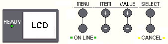

Replacing Printer Toner (Okidata)
This procedure describes how to replace the toner cartridge or image drum in the Okidata model B4300, B4350, and B4600 printers.
The printer control panel is comprised of a green on-line indicator, a LCD display, and eight buttons.

| Name | Function |
|---|---|
| READY indicator (green) |
|
| LCD display | Two rows of up to 8 characters displaying print status, menu items, and error messages. |
| ON-LINE | Press briefly to put the printer on-line or off-line to the PC. |
| MENU | Press briefly to enter the MENU mode. Press briefly again to select the next menu. |
| ITEM ( + ) | Press briefly to scroll forward to the next menu item. |
| VALUE ( + ) | Press briefly to scroll forward to the next value setting for each menu item. |
| SELECT | Press briefly to select the menu, item, or value indicated in the LCD panel. |
| CANCEL | Press to cancel a print job. |
| ITEM or VALUE ( - ) | Press briefly to scroll backward to the previous setting for each menu item. |